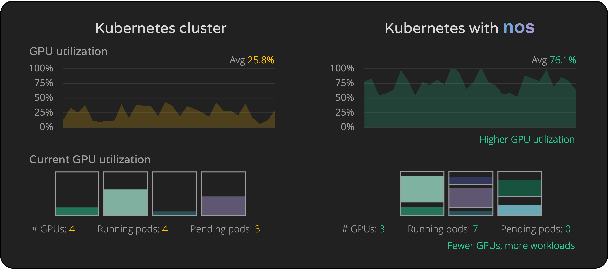

Overview
nos is the open-source module for running AI workloads on Kubernetes in an optimized way, increasing GPU utilization, cutting down infrastructure costs and improving workloads performance.
Currently, the available features are:
-
Dynamic GPU partitioning: allow to schedule Pods requesting fractions of GPU. GPU partitioning is performed automatically in real-time based on the Pods pending and running in the cluster, so that Pods can request only the resources that are strictly necessary and GPUs are always fully utilized.
-
Elastic Resource Quota management: increase the number of Pods running on the cluster by allowing namespaces to borrow quotas of reserved resources from other namespaces as long as they are not using them.
